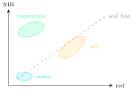

Definition
- Feature space: , one axis per feature; a pixel is a vector .
- Cluster: the region occupied by the pixels of one cover type, described by a class-conditional density , often Gaussian.
- Information class: a category of the user's legend (forest, urban, crop).
- Spectral class: a group of pixels with similar features. "Forest" may be two spectral classes (sunlit and shaded slopes); "pasture" and "lawn" may be one.
Cluster shape and size depend on the features used, on the cover type, on noise and on topographic effects. Classification amounts to partitioning the feature space into decision regions, one per class.
Picture

Two features already separate three classes; the soil line runs diagonally.
Intuition
Classification is geography in feature space: classes are countries, and the classifier draws their borders.
Pitfall
Clusters overlap: pixels in the overlap will be misclassified by any rule, and only better features (more bands, texture, time series) can pull the clusters apart.